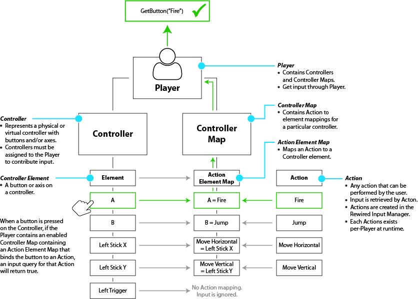

Controller Maps
One of the most unique and powerful features of Rewired is the Controller Map system.
A Controller Map is a map of bindings between Controller elements and Actions for a single Controller.
Controller Maps are owned by the Player, not the Controller, so changes you make to one Player's maps don't affect the other Players' even if they're using the same Controller. Each Controller assigned to a Player must have its own Controller Maps with bindings defined for Action-based input to function.
You can create pre-defined Controller Map configurations for known controller types and controller templates and load the maps at runtime or when a compatible Joystick is assigned. Pre-defined maps for controllers are created in the Rewired Editor. For more information about how to create maps, see Creating and Editing Controller Maps.
If you create a user control assignment screen, the user can customize his Controller Maps for any joystick or controller. (See Creating a Controller Mapping screen for information.)
Maps co-exist so you can have as many maps for each controller as you need. For example: If you have multiple game modes such as Infantry, Tank, Airplane, you can have shared controls on one map, and mode-specific controls each on its own map. You can have even more maps as needed: A Menu map for when you're in the menus, a system map for controls like Save/Load and Quit, multiple maps for different players on the keyboard, etc. All the maps can co-exist simultaneously and can be enabled or disabled as needed, for example, when changing game modes.
A shared controller (the keyboard for example) can be mapped by any number of Players with any number of maps.
Maps can be saved to XML or JSON. (See Saving and loading Controller Maps for more information.)
Creating and Editing Controller Maps:
Controller Maps are created and edited in the Rewired Editor.
Rewired Editor - Joystick Maps
Rewired Editor - Keyboard Maps
Rewired Editor - Mouse Maps
Rewired Editor - Custom Controller Maps
Assigning/Loading Controller Maps:
When you create a Controller Map (Joystick Map, Keyboard Map, etc.) in the Rewired Input Manager, you are defining a default Map that can be used by any Player. In order for a Player to make use of a Controller Map, it must first be assigned to that Player and enabled. You can assign the Controller Map in the Rewired Input Manager under the Players page, and when the game starts and Rewired initializes, it will load the map into the Player. You can also assign/load Controller Maps at runtime through scripting. See How To's - Loading Controller Maps at runtime for more information.
Enabling and Disabling Controller Maps:
Controller Maps can be enabled or disabled at will via scripting. This can be useful if you want to change game modes and have a different set of controls become active. For example, opening a menu screen. Disabled Controller Maps will not return any value when the Player is queried for an Action's input value. Controller Maps are stored in the Player class.
For a Controller Map to be processed and contribute to input, it must be enabled. The starting enabled state of the map can be set in the Rewired Input Manager on the Players page where you have assigned the Controller Maps to be loaded at start. To enable or disable a Controller Map at runtime via scripting, see How To’s – Enabling and Disabling Controller Maps.
Individual Action Element Maps (Action bindings) in each Controller Map can also be enabled and disabled via scripting.
When a controller (excluding mouse and keyboard) is attached to the system, Rewired will attempt to identify that controller and load a hardware definition. When the Joystick is assigned to a Player, it will load Joystick Maps into the Player if you have created any Joystick Maps in the Rewired Input Manager that are compatible with that controller. (You can see the the current list of recognized controllers with extended support here.)
If you want your players to be able to plugin in a controller and have it "just work", you should create a Joystick Map for each controller you want to explicitly support. To save time, you can create a Joystick Map for a Controller Template that includes the controller you wish to support.
Joystick input returned by a Player is determined by the buttons and axes bound to Actions in one or more Joystick Maps assigned to a Player. When a button or axis is activated that is bound to an Action, the Player will return a value for that Action. You create these maps in the Rewired Input Manager and assign them to each Player and they will be loaded at start. You can also enable, disable, remove, add, load, and save Joystick Maps at runtime.
A joystick must be assigned to a Player, have at least one Joystick Map with valid button/axis mappings assigned in that Player, and be enabled before any input will be returned through the Player.
How Joystick Maps are Loaded
Joystick Maps for a particular Joystick do not exist in the Player unless that Joystick is currently connected and assigned to that Player. By default, Rewired auto-assigns Joysticks to each Player as controllers are detected. The Joystick Maps are loaded at assignment time based on the settings defined in the Rewired Input Manager - Player page for that particular Player.
Keyboard input returned by a Player is determined by the keys bound to Actions in one or more Keyboard Maps assigned to a Player. When a key is pressed that is bound to an Action, the Player will return a value for that Action. You create these maps in the Rewired Input Manager and assign them to each Player and they will be loaded at start. You can also enable, disable, remove, add, load, and save Keyboard Maps at runtime.
The keyboard is similar to a Joystick in that it must be assigned to a Player before you can receive input from it. (This can be set in the Rewired Input Manager or through the player.controllers.hasKeyboard property.)
Mouse input returned by a Player is determined by the axes and buttons bound to Actions in one or more Mouse Maps assigned to a Player. When a button or axis is activated that is bound to an Action, the Player will return a value for that Action. You create these maps in the Rewired Input Manager and assign them to each Player and they will be loaded at start. You can also enable, disable, remove, add, load, and save Mouse Maps at runtime.
The mouse is similar to a Joystick in that it must be assigned to a Player before you can receive input from it. (This can be set in the Rewired Input Manager or through the player.controllers.hasMouse property.)
A Controller Template represents a generalized controller layout that applies to all compatible controllers providing a common interface to work with these controllers. When you create a map for a Controller Template, any controller that implements the template will inherit that map automatically without the need for you to create a map specifically for that controller. For example, Rewired comes with a Gamepad Template. When you create a map for this Gamepad Template, you do not need to create individual maps specifically for any of the gamepads listed on this page because they are all covered by the Gamepad Template. This makes is much quicker to create pre-defined Controller Maps for a huge variety of controllers. Additionally, as more controllers are added to the Template in the future, the map you've already created will work with these new controllers as well.
Please see Controller Templates for detailed information.
Controllers without Templates:
For the other controllers that do not currently have Controller Templates, you have to create a map for each you want supported out of the box (meaning you don't want the user to manually have to map them before playing). If you don't create a map and you want the user to be able to use that controller, you'll have to make a remapping screen where the user can map his controls manually (see Creating a Controller Mapping Screen for more information).
Unknown Controllers (Joysticks only):
For unrecognized controllers (controllers not listed here), Rewired will use the Unknown Controller map (whether you define a map for this or not). This is a generic map that is just a sequential list of axes and buttons, each corresponding to an axis and button on the controller in the order they are defined by the controller hardware. You should always provide the user with a way to remap controls so they can set up their unknown controllers how they see fit. See Creating a Controller Mapping Screen for more information.
Note that even though a controller is unknown to Rewired, saved mapping data can still be saved and loaded for these controllers. This means that if your users make custom control mappings for unrecognized controllers, they can still save their configurations and continue off with the same controller layouts after quitting and restarting the game. All saving and loading of controller data is up to the developer to implement. See Saving and Loading Controller Maps for more information.
It is recommended that you create an Unknown Controller map so unrecognized controllers can at least work to some degree immediately without manual user mapping. While there's no way for you to know which axis or button corresponds to which element on the controller the user plugs in, the following table shows the most common layout for unknown gamepads:
| Controller Element | Maps To |
| Left Stick X | Axis 0 |
| Left Stick Y | Axis 1 (inverted) |
| Right Stick X | Axis 2 |
| Right Stick Y | Axis 3 (inverted) |
| Buttons | Button 0-X |
| D-Pad (optional) | Hat 1 |
Special Considerations for XInput gamepads on Windows Standalone, Windows App Store, and Windows 10 Universal:
On Windows Standalone builds and in the Windows Unity Editor, when Use XInput is enabled, and always on Windows App Store and Windows 10 Universal builds, Rewired uses XInput for all XInput-compatible controllers instead of the chosen primary input source. This has some implications on creating Joystick Maps:
When using XInput, Rewired has no way of determining the actual controller type because this information is not available through XInput. The only information Rewired has to identify the controller is that it is XInput-compatible. Therefore, all XInput devices are treated as "XBox 360 Controller". This means, with Use XInput enabled, if you plug in a XBox One Controller, Rewired cannot identify that it's an XBox One Controller and load the Joystick Maps you created specifically for the XBox One Controller. Instead, it identifies it simply as an "XInput Gamepad" and loads the Joystick Maps from the XBox 360 Controller maps you've created. This is an inherent limitation in XInput.
But because Rewired has the Gamepad Template that is compatible with these controllers, it's easiest to just create a Dual Analog Gamepad Joystick Map instead and it will work for any XInput device when Use XInput is enabled. This way, you don't have to worry about making separate maps for XBox 360 Controller, XBox One Controller, etc. and everything will just work. This also works cross-platform.
Special Considerations for MFI gamepads on iOS, tvOS, and OSX:
Rewired supports many MFI gamepads on iOS, tvOS, and OSX. However, these platforms identify controllers differently so it affects which Joystick Maps are loaded.
iOS/tvOS - All MFI-compatible gamepads are recognized simply as "iOS MFI Gamepad" and will load the "iOS MFI Gamepad" Joystick Maps you've created (if any). All MFI gamepads are supported. Joystick Maps created for specific controllers such as SteelSeries Nimbus will not be loaded and do not apply to iOS/tvOS.
OSX - MFI-compatible gamepads cannot be automatically recognized as such and are identified on an individual basis like any other controller on OSX. Joystick Maps created for the specific controller will be loaded such as SteelSeries Nimbus. Joystick Maps created for the "iOS MFI Gamepad" will not be loaded on OSX.
In order to provide coverage for all supported MFI and other gamepads, simply create your Joystick Maps for the Gamepad Template and they will work across platforms. By using the template, you don't have to worry about any of these platform-specific issues.
How Input Is Processed by Controller Maps:
This diagram illustrates how input received from controllers gets mapped to Actions by the Player class. This diagram shows one possible example of a more advanced input scheme that you can create with Rewired.
The maps in this diagram are based on an input scheme which allows you to switch among various game modes. Only one game mode is active at any one time. The purpose for this is to allow for different control sets based on the current state of the game. For example, when the user opens a menu, the game mode would change to Menu and all maps with controls no longer valid in the Menu mode would be disabled. This is achieved through the use of Map Categories. See Enabling and Disabling Controller Maps for information on how to manage game mode switching.
- Gameplay Shared represent controls that are common to all gameplay modes: Infantry, Vehicle, and Airplane. This might include actions such as Fire.
- Vehicle represents controls specific to vehicle control.
- System represents system controls such as switching to Menu mode, Save, Load, Pause, etc.
In this example, the current game mode is Vehicle, so only maps in the categories Vehicle, Gameplay Shared, and System are currently active.
The two diagrams below show how input from a source controller element is processed by the Controller Maps in Player, returning a result to the calling script. Note that some Controller Maps are disabled, while others are enabled (disabled maps are greyed out). When a Controller Map is disabled, input is not passed through.
This diagram shows in more detail the relationship of Players, Controllers, Controller Maps, Action Element Maps, Controller Elements, and Actions. Specifically, it shows how individual Action Element Maps in the Controller Map serve to bind Actions to Controller elements.

Working with Controller Maps
How To's - Enabling and Disabling Controller Maps
How To's - Enabling and Disabling Action Element Maps
How To's - Managing Controller Maps at runtime
How To's - Saving and Loading Controller Maps
Loading Default Controller Maps
player.controllers.maps.LoadMap
player.controllers.maps.LoadDefaultMaps
See Also
API Reference - Joystick Map
API Reference - Keyboard Map
API Reference - Mouse Map
API Reference - Custom Controller Map